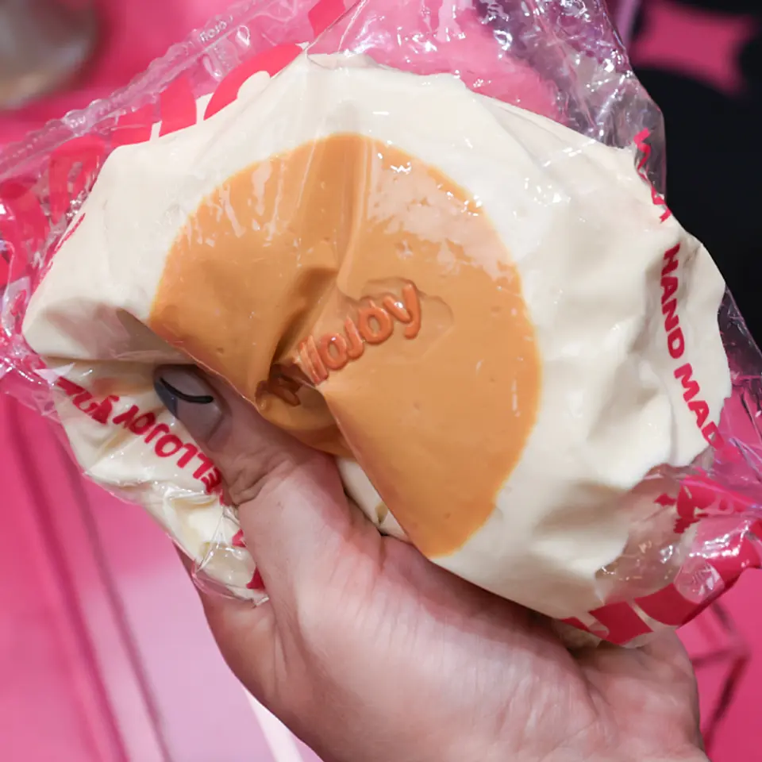
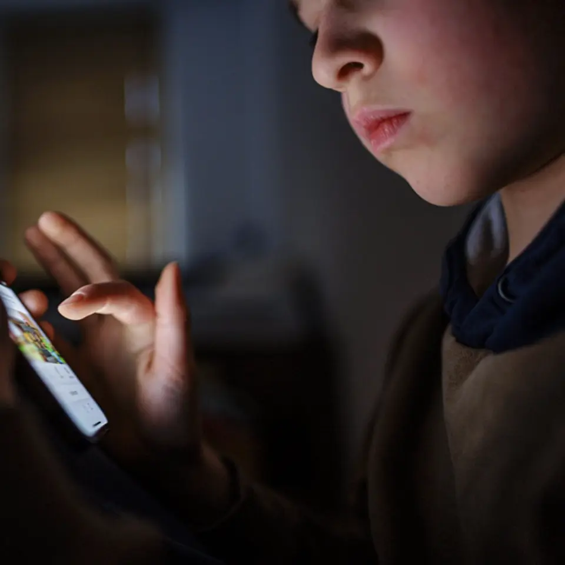
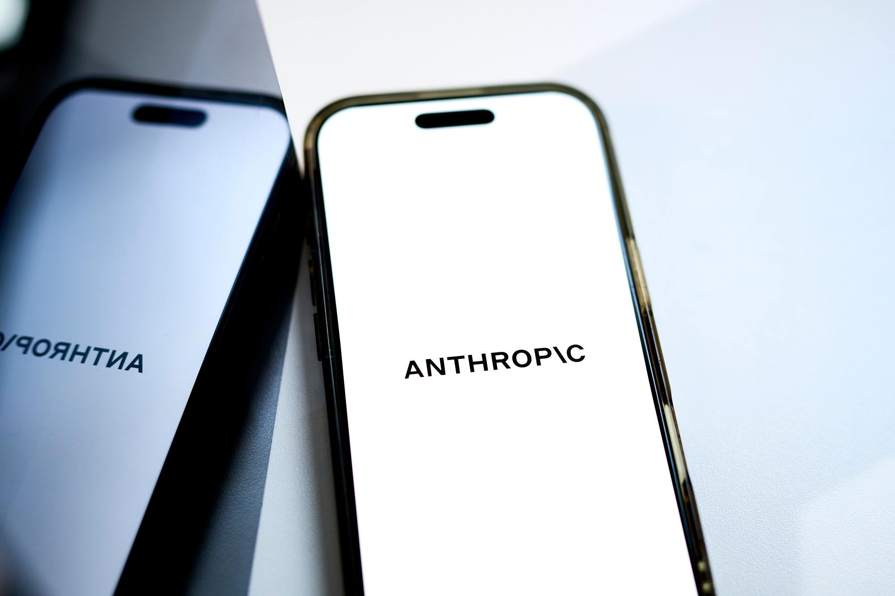

【CEO独占】今年、最もバズった｢おもちゃ｣を作った中国企業
発行日時：2026年11月2日 05:30 JST
NewsPicks原文を読む

あなたに関係ありそうな理由
商品開発と顧客との関係づくりを、急成長したブランドの具体例から考えられます。
概要
中国発の玩具ブランド「メロジョイ」は、柔らかな感触を楽しむスクイーズで日本の消費者を引きつけた。NewsPicksは創業者CEOの方堃氏を取材している。ケーキや動物などを模した商品はSNSを通じて人気が広がり、オンライン販売では開始から数分で売り切れる日が続いた。二次流通で高値が付くほど入手が難しく、初のオフラインイベントでは予想を超える応募によって一時中止に至った。
日本法人の設立は2025年4月で、同年6月のTikTok Shop開始とほぼ同時に販売を始めた。記事によると販売開始から約1年3カ月時点の日本の売上規模は約70億円で、世界全体の約90億円の大部分を占める。方氏は、日本を重視していたものの、伸びは想定を超えたと話す。9月には原宿で初のポップアップショップを開き、オンライン中心だった商品を直接手に取れる場を設けた。
独特の感触の出発点は、開発担当者が素材の調合を間違え、偶然柔らかいものができたことだった。ただし、そのまま商品化したわけではなく、試行錯誤を重ねたという。方氏は食品グレードのシリコン系素材を使い、触感や見た目を改良し続ける開発力を強調する。デザインや研究開発に関わるチームは100人を超え、製造工場には800〜1000人が働く。
販売ではライブ配信を活用し、静止画では伝わりにくい柔らかさを見せている。方氏によれば、SNSの総フォロワーは150万人以上、配信の平均同時接続は4〜5万人という。中止となったイベントでは謝罪と代替策を示し、顧客の楽しみを守れなかったことにも言及した。顧客と日々感情をやり取りする関係が、商品を売ることに重なっていると記事は描く。
方氏は熱狂が永遠に続くとは考えず、ブーム後にも残る需要を長く掘り起こしたいと語る。表示コメントで倉田浩美氏は、買えないから欲しい状態から、ブランドだから再び欲しい関係を育てられるかを論点に挙げた。一方、早船明夫氏は人気の持続に疑問を示す。実店舗や別の商品への展開が、流行後の需要につながるかが注目される。商品を研究し、市場の反応を見ながら改良する能力を、方氏は自社の強みとしている。販売数だけでなく、顧客の体験を継続的に聞き取る姿勢が、今後の商品づくりにどう生きるかも見どころだ。
仕事や会話で使える一言
売り切れる勢いだけでなく、ブームの後にも選ばれる理由を育てたいですね。
【データ解説】インターネットの崩壊が止まらない
発行日時：2026年11月2日 05:30 JST
NewsPicks原文を読む
あなたに関係ありそうな理由
会社や個人がネット上に置く情報と、その守り方を見直すきっかけになります。
概要
AIエージェントの普及が、サイバー攻撃とインターネットの使われ方をどう変えるのか。NewsPicksの後藤直義氏が、脆弱性の発見や攻撃、検索からの送客減少などをデータと専門家の見方で整理した。記事は2026年10月に深刻なPHPの脆弱性が公表され、政府や企業が対応に追われた例から始まる。ソフトウェアの弱点を見つけるAIは防御に役立つ一方、攻撃側にも使われ得る。
記事によれば、脆弱性の公表より先に攻撃が行われる事例が増えている。PHPの問題でも公表前に攻撃が始まっていたと紹介する。AIを使った別の攻撃例では、6日間に約8000ドルのコストで30社以上に侵入し、60万人以上のカード情報を盗んだという分析が引用される。こうした数字は個別の調査に基づくもので、すべての攻撃に当てはまるわけではない。
人間を前提に作られたネットに、AIによるアクセスが増えることも論点だ。記事は2025年のウェブトラフィックの53％をBotが占めたとのデータを挙げ、銀行が顧客の口座に入るAIを検知したという報道を紹介する。本人の依頼による操作と攻撃をどう見分けるかが課題になる。利用者が便利さのためにログイン情報を渡す行為も、管理の難しさを増す。
検索の変化は、情報を作る側の収益にも及ぶ。記事によると、Google検索からニュースサイトへの送客は1年間で40％減少したとの調査がある。AIが検索結果の中で答えを示せば、読者が元のサイトに進まない場合が増える。専門家の中には、より閉じた会員制の空間に人が集まるという見方もあるが、これは将来についての予測だ。
日本企業への示唆として、増田幸美氏は便利さを優先し、機微な情報まで外部からアクセスできる場所に置いてきた点を問題視する。必要な情報とアクセス範囲を見直し、停止や復旧まで含めて備えることが経営課題となる。表示コメントでは武藤雅幸氏が防御側のAI活用にも期待し、椿奈緒子氏は取締役会で現状と方針を確認するよう提案した。脅威の大きさだけでなく、組織が何を守り、どこから改善するかを決めたい。記事はインターネットが直ちに消えると断定するものではなく、複数の見通しを紹介している。自社の対策では、最先端の技術導入だけでなく、基本的な更新やアクセス管理の実行状況も確認したい。
仕事や会話で使える一言
どの情報を外から使えるようにしているか、守りと運用を一緒に確認したいですね。
【残酷】若者が「巨額」を溶かす新市場のワナ
発行日時：2026年11月2日 05:30 JST
NewsPicks原文を読む

あなたに関係ありそうな理由
若者のオンライン上のお金の使い方や、依存を防ぐ仕組みを家族や職場で話す材料になります。
概要
米国の予測市場で若者の取引が拡大することに、非営利団体共同創設者のエイミー・L・ケネディ氏が警鐘を鳴らす。Fortuneに掲載された意見コラムをNewsPicksが配信した。記事が引用するCNNの分析では、2026年に18〜21歳が予測市場Kalshiで取引した金額は推計54億ドルに上る。この数字は取引額であり、若者が失った金額を示すものではない。
米国では多くの州で通常の賭博に年齢制限がある一方、予測市場には18歳から参加できる。著者は、選挙や株式投資に参加できる年齢なら予測市場にも参加できるという反論を紹介したうえで、仕組みの違いと依存の危険を訴える。スマートフォンからいつでも参加でき、即時の報酬が繰り返される環境では、若者が損失や利用時間を抑えにくくなるという主張だ。
著者が問題にするのは、予測市場だけではない。子どもの頃から通知やゲーム内の報酬に接し、利用を続けるよう促されるデジタル環境があると論じる。記事は、年齢や関心などの情報を使ったコンテンツや広告が、利用者を引き留める手段になり得ると説明する。ただし、コラム中の因果関係や評価は著者の見解として読む必要がある。
規制を連邦当局と州のどちらが担うかをめぐる議論は続いている。ケネディ氏は決着を待たずに取れる対策として、最低利用年齢を21歳に引き上げること、入金額・損失額・利用時間の上限、本人が利用を遮断する自己排除の仕組みを提案する。若者を標的にした欺瞞的な広告の禁止や、推薦アルゴリズムの透明性向上も求めた。
表示コメントで西村友作氏は、自身の経験を踏まえ、意志の強さだけに任せず利用や入金の上限を設ける必要を述べた。S Hideaki氏は、オンラインの容易さだけでなく社会構造にも目を向けるべきだと見る。記事は予測市場全体の評価を結論づける調査ではなく、若者の保護を訴える立場から書かれたものだ。家族で話す際には、取引金額、実際の損失、利用者の年齢、規制の対象を混同せず、どんな歯止めが利用できるかを確かめたい。著者は、企業が若者にどんな内容を推薦し、どの情報を広告に使っているかを明らかにするよう求める。保護策の実効性を判断するには、規則だけでなく運営側が守っているかの検証も必要になる。
仕事や会話で使える一言
取引額と損失額を区別しながら、利用を止める仕組みも確認したいですね。
友人同士の立て替えと気まずい請求 その心理的背景とは
発行日時：2026年11月2日 05:20 JST
NewsPicks原文を読む
あなたに関係ありそうな理由
会食や旅行の精算で、催促する側と待たせる側の負担を減らすヒントになります。
概要
友人との食事や旅行で、一人がまとめて支払い、後で精算する。便利な方法だが、返済を求める側には気まずさが残る。ウォール・ストリート・ジャーナルの記者は、自分が友人との会計を立て替えがちで、返済を促すたびに不安を感じる経験から、その背景を探った。先日の食事でも一人はすぐ送金したが、別の友人には翌日グループチャットで声をかける必要があった。
送金アプリZelleの調査によると、グループ費用の大半を一人が払い、後で返してもらうことが多いと答えたZ世代は、ミレニアル世代の2倍だったという。個別会計の手間を省けるほか、旅行やコンサートでは一つのカードで購入すれば席を並べやすい。決済アプリも正確な金額を後から送ることを容易にした。
一方、支払いと返済の間には時間差が生じる。同じ調査では若い社会人の約20％が、返済に最長1カ月かかることがあると答えた。記者の友人は、約50ドルのチケット代を何週間も待ち、リマインダーを送り、試合の数日前にようやく返してもらったという。立て替えた人には、その間の予算管理や相手への催促という負担が残る。
行動ファイナンスの専門家マリオ・ディフィオーレ氏は、お金を用途などによって異なるものとして扱う「心の会計」に触れる。一人が会計を負担すると、他の人はその支出を当面の現実から切り離しやすいという見方だ。別の専門家ティミ・ジョイ・ジョーゲンセン氏は、返済が遅い相手が故意だと安易に決めつけないよう注意し、繰り返す場合は借りがない時に話すことを勧める。
同氏は、会計時に「1週間以内」など期限を伝えておけば、後からの気まずい催促を減らせるとも提案する。記事では、共通の支出と各人の負担をアプリで明示した旅行の例も紹介された。表示コメントで福本勲氏は早い精算を互いへの礼儀と捉え、高松陽介氏はその場での決済や翌日など早期の請求を勧めている。立て替えを引き受ける前に、金額、送金方法、期限を共有するだけでも、相手に頼みにくい状況を減らせそうだ。記者は、立て替えを申し出る自分の動機も振り返っている。会計の場を円滑にしたい気持ちが、後の気まずい会話を先延ばしにしている可能性があるという。便利さと負担の両方を見ておきたい。
仕事や会話で使える一言
立て替える時に、金額と返済の期限をその場で決めておきましょう。
アンソロピック、数年で140兆円超の巨額支出へ－大型IPO控え明らかに
発行日時：2026年11月2日 23:56 JST
NewsPicks原文を読む

あなたに関係ありそうな理由
生成AIサービスの拡大を支える計算資源の費用と、今後の事業継続性を考える材料です。
概要
米AI企業アンソロピックは、2026年7〜9月期の売上高が約170億ドルとなり、前年同期の14億ドルから約12倍に増えたと開示した。Bloombergが米証券取引委員会への11月2日の提出資料を基に報じた。同社は大型の新規株式公開を準備している。一方で、今後数年間に及ぶ巨額の支払い義務も明らかになり、成長を支える費用に注目が集まっている。
記事によると、契約上の支出義務は8950億ドルを超え、そのほぼすべてが計算能力やインフラに関連する。約4480億ドルは2030年末まで、約700億ドルは2027年9月までの1年間に発生する見通しだ。9月30日以降に義務がさらに約1000億ドル増えたという。これは契約上の将来の支払い義務であり、単純に当期に支払った設備投資額を意味するものではない。
7〜9月期の純損失は233億ドルで、前年同期の121億ドルから拡大した。ただしこのうち219億ドルは、企業価値の上昇に伴う転換社債などの評価増による会計上の損失だ。営業損益は5億6700万ドルの赤字で、4〜6月期に営業黒字へ転じた後、再び赤字となった。売上の伸びと利益、会計上の評価損は別の数字として見る必要がある。
価格競争も業績に影響する。資料によれば、新モデルの一部値下げや契約上の割引で、7〜9月期売上高は約6億ドル押し下げられた。計算資源の確保には長期の契約が必要な一方、サービスの単価や利用量は競争によって変わり得る。投資家が成長率だけでなく、将来の収益で支払いを賄えるかを見極める理由がここにある。
Bloombergは、IPOを控えた投資家説明後に、関係者が妥当とみる評価額を引き下げたとも報じる。金額は匿名の関係者による見方で、決定した上場時価総額ではない。表示コメントで門前太作氏は、計算資源の購入契約やリースなどの将来支払義務と、持続的なキャッシュフローの関係を重要視した。AIサービスを使う側にとっても、企業の成長と提供を支えるコストの両方を追う材料になる。同社は10月26日にIPOを申請し、米感謝祭前の実施を予定していると記事は伝える。大規模な調達を目指す中、AIの安全性についても厳しい視線が向けられているという。上場条件は今後確認が必要だ。
仕事や会話で使える一言
大きな売上だけでなく、長期の支払い義務をどう賄うかも見たいですね。